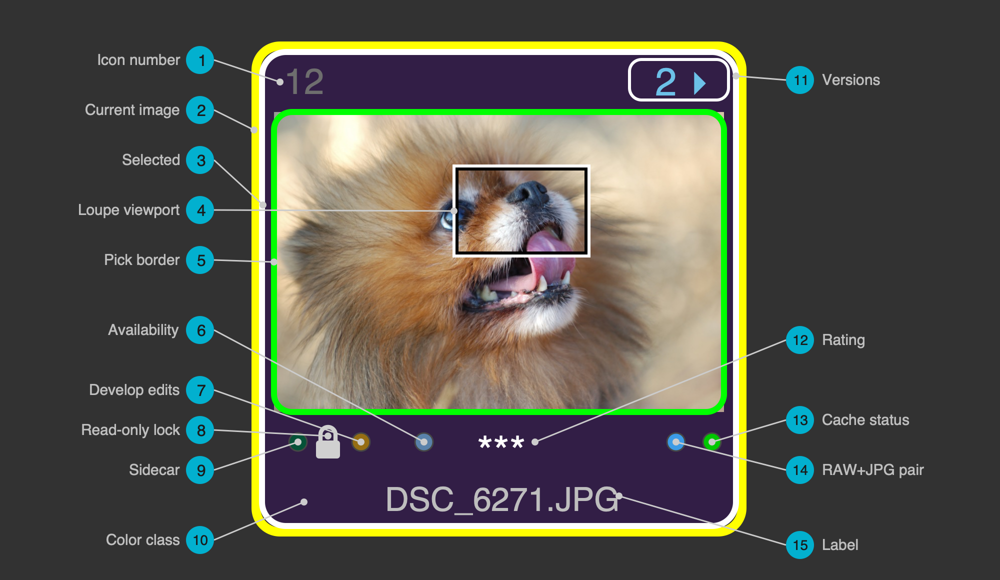

Every thumbnail, in the grid and in the filmstrip, can carry outlines and badges that tell you about the image without opening it. The drawing below shows one thumbnail, enlarged three times, with everything turned on at once. In practice you only see the ones that apply to that image.
The badges have their own strips of the frame, one above the picture and one below it, so they never cover the image.
Hover over any badge in Winnow and its tooltip says what it means for that image. Hover over the frame, outside the picture, for a reminder of the outline colors.

| # | Element | Meaning |
|---|---|---|
2 | Current image |
Yellow, the thickest outline, around the whole cell. The image shown in the loupe. |
3 | Selected |
White, on the frame. The image is part of the selection. The current image is usually selected as well, so it shows both outlines. |
5 | Pick border |
Drawn on the edge of the picture itself. Only one shows at a time, in this order of priority: Green: picked. Blue: ingested (copied off the card). Red: rejected. |
10 | Color class |
The background reflects the image color class (red, yellow, green, blue or purple). |
4 | Loupe viewport |
A white and black rectangle on the current image when the loupe is zoomed in. It shows which part of the image the loupe is showing. |
| # | Element | Meaning |
|---|---|---|
1 | Icon number |
Top-left corner. The image's position in the current sort and filter. Shown when icon numbers are turned on, and always for a Library duplicate: Red number: a duplicate. Another image in the Library has the same capture time, file type and pixels. Purple number: a duplicate you have okayed, so the duplicates check ignores it. White badge: while a duplicate is the current image, its twins' badges turn white so you can pick them out. |
11 | Versions |
Top-right corner. Blue count and arrow: the original has this many versions (virtual copies). Click it to show or hide them. A white outline appears when the mouse is over it, because it is a button. Grey name: this thumbnail is a version, and this is its name (v2, v3 ... until you name it). |
| # | Element | Meaning |
|---|---|---|
9 | Sidecar |
● Dark teal dot, bottom-left. The image has a sidecar file holding Winnow's edits and metadata. |
8 | Read-only lock |
A padlock. The image file is locked or read-only, so metadata cannot be written to it. |
7 | Develop edits |
● Amber dot. The image has Develop edits. It shows in both Preview and Develop mode. |
6 | Availability |
Library only. The image cannot be opened right now: ● Slate blue: offline. It is on a drive that is not connected. Plug the drive in. ● Dull red: missing. The drive is there but the file is not. It was moved or deleted outside Winnow. |
12 | Rating |
White stars, centred under the picture. On thumbnails too narrow for the stars, the rating is shown as a single number instead. Shown when rating badges are turned on. A video shows its duration over the bottom of the picture. |
14 | RAW+JPG pair |
● Left of the cache dot. This is the JPG half of a RAW+JPG pair, shown when Combine RAW+JPG is on. In Winnow it is a small blue chain link. |
13 | Cache status |
Dot, bottom-right. How good a picture the loupe can show at once, without decoding the file: ● Green: full size. A developed preview, or a JPG, TIFF or HEIC loaded at full size. ● Dark purple: smaller than full size. A raw file's embedded preview, or a developed preview saved at a reduced size. ● Red: no preview yet. Videos have no cache dot. |
15 | Label |
Below the picture: the file name or the title, whichever you chose. Shown when thumbnail labels are turned on. |
During a slideshow the dots and the versions badge are hidden.
The color class background and the rating are both controlled by the rating badges setting: turn it off and both disappear.
Some cameras put black bars above and below their embedded thumbnail. Winnow ignores them when it draws the loupe viewport, so the rectangle lines up with the real picture.